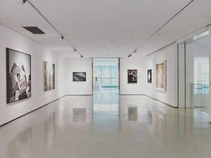
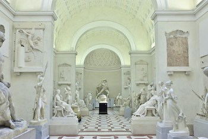

Museums make you feel good

Photo by Dannie Jing on Unsplash
Times are tight in this economic climate, and it’s often easy to use a museum admission price as an excuse to stay at home. However, a recent study conducted by Harris Interactive finds that people are happier when they spend money on experiences rather than material purchases. According to Leaf Van Boven, an Assistant Professor of Psychology at CU-Boulder, experiences are shown to create more happiness than material goods because they provide positive personal reinterpretations over time. That is, as we revisit the memory of our trip to the museum, we have a tendency to psychologically weed out any negative memories (should there be any). Experiences, such as visiting a museum, can also become a meaningful part of ones identity and contribute to successful social relationships in a manner that material items cannot. So consider foregoing an outing for items that you may not need; going to the museum will make you happier in the long run.
Museums make you smarter

Photo by Amy-Leigh Barnard on Unsplash
There is no doubt that a primary role of museums is to engage and educate the community. Museum exhibits inspire interest in an area of study, item, time period, or an idea– but there’s more going on in museums in regard to education than one might think. Schools rely heavily on museums to enhance the their curriculum. The New York Museum Education Act, for example, aims to create a partnership between schools and cultural institutions to prepare students for the 21st century. Galleries are becoming classrooms, and not just for kids. Even the museums themselves have interesting histories to inspire and educate visitors. It becomes nearly impossible to exit a museum without having gained any information or insight during your visit.
Museums provide an effective way of learning

Photo by Matteo Maretto on Unsplash
Finally, you won't want to miss out on cuddly little zoo animals. Lions, tigers and bears...Oh My! We have the largest selection of born in captivity animals. We didn't want to take them from their natural habitat, so we just got them from the other zoos in the state.